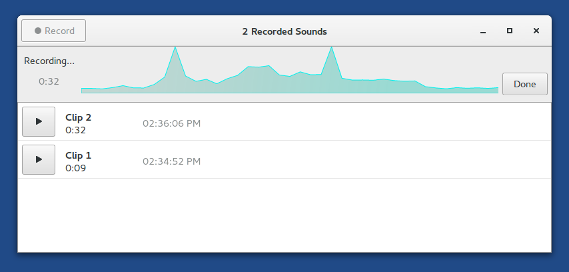

This release fixes many security issues and users should upgrade as soon as possible.
Changes
New features
We installed again GNOME Sound Recorder to provide a very simple application for recording sound in addition to the more complex Audacity. Sound clips recorded using GNOME Sound Recorder are saved to the Recordings folder.

Upgrades and changes
We removed I2P, an alternative anonymity network, because we unfortunately have failed to find a developer to maintain I2P in Tails. Maintaining software like I2P well-integrated in Tails takes time and effort and our team is too busy with other priorities.
Upgrade Linux to 4.9.13. This should improve the support for newer hardware (graphics, Wi-Fi, etc.).
For more details, read our changelog.
Known issues
- The video application Totem may crash Tails. You can work around this problem by installing VLC.
See the list of long-standing issues.
Get Tails 2.12
To install, follow our installation instructions.
To upgrade, automatic upgrades are available from 2.10 and 2.11 to 2.12.
If you cannot do an automatic upgrade or if you fail to start after an automatic upgrade, please try to do a manual upgrade.
What's coming up?
Tails 3.0 is scheduled for June 13th.
Have a look at our roadmap to see where we are heading to.
We need your help and there are many ways to contribute to Tails (donating is only one of them). Come talk to us!